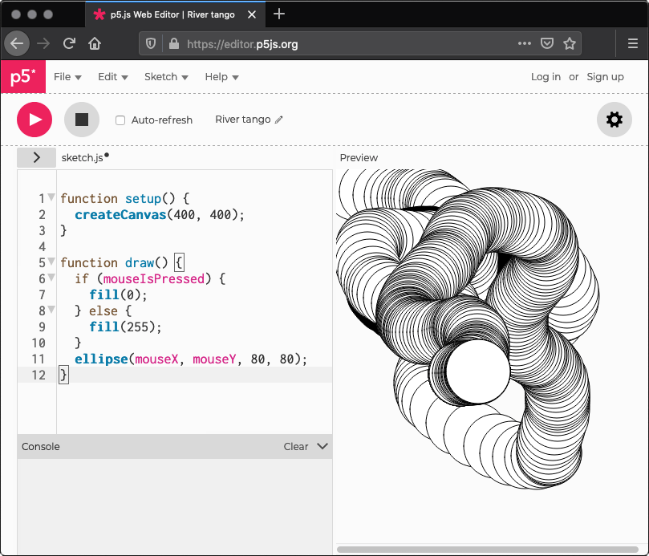
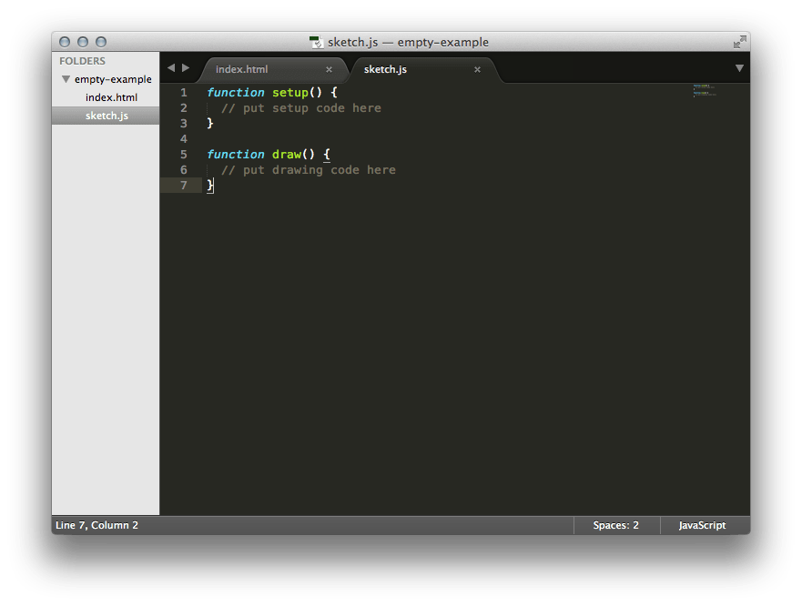

スタート
このページでは、p5.jsプロジェクトのセットアップと 最初のスケッチの作成方法について説明します。 始めるには p5.js editorを使用するのが最も簡単です。Webエディターを開き、 最初のスケッチを作成できます。 p5.jsのデスクトップ版で作業したい場合は、こちらを参照してください: ダウンロード手順.
最初のスケッチ
円を描画するコードサンプル
p5.js web editorの中で、以下のコードを見つけることができます：
function setup() {
createCanvas(400, 400);
}
function draw() {
background(220);
}
background(220);の下に、以下のコードを追加します：ellipse(50,50,80,80);.
ここまでで、コードは以下のようになります：
円を描画するコードサンプル
function setup() {
createCanvas(400, 400);
}
function draw() {
background(220);
ellipse(50,50,80,80);
}
今追加した行は 「中心が左から50ピクセル、上から50ピクセルの位置にある、幅と高さが80ピクセルの楕円」 を描画します。
エディターで再生ボタンを押して、コードが実行されるのを確認しましょう！
スクリーンリーダーユーザー向け注意事項
もしスクリーンリーダーを使用している場合は、 p5オンラインエディターでアクセシブル出力をオンにする必要があります。 エディターの外部では、HTMLにアクセシビリティライブラリを追加する必要があります。 詳細については、 これを参照してください:「スクリーンリーダーを使用したp5チュートリアル」.
すべて正しく入力した場合、 以下がディスプレイウィンドウに表示されます。

何も表示されない場合、 エディターが入力内容を理解できていない可能性があります。 この場合、サンプルのコードを正確にコピーしていることを確認してください。 数値は括弧内に含まれ、それらの間にはカンマが必要であり、行末にはセミコロンが必要です。 また、ellipseは正しい綴りで記述されている必要があります。
プログラミングを始める上で最も難しいことの一つは、 構文を非常に具体的に指定する必要があることです。 ブラウザはあなたが何を言いたいかを常に正確に把握するほど賢くはなく、 句読点の配置に関してはかなり厳格です。 少し練習すれば慣れていきます。 エディタの左下にコンソールセクションがあります。 ここでは、エディタからのエラーに関する詳細なメッセージを確認することができます。
インタラクションを含むコードサンプル
次に、もう少しエキサイティングなスケッチに進んでみましょう。 前のサンプルを修正して、次のようにしてみてください。
function setup() {
createCanvas(400, 400);
}
function draw() {
if (mouseIsPressed) {
fill(0);
} else {
fill(255);
}
ellipse(mouseX, mouseY, 80, 80);
}
このプログラムは、「400ピクセルの幅と400ピクセルの高さのキャンバスを作成し、 マウスの位置で白い円」を描き始めます。 マウスボタンが押されると、円の色が黒に変わります。 コードを実行し、マウスを動かしてクリックして、体験してみてください。
次に何をすべきか？
- 「学ぶ」ページと「サンプル」ページをチェックしてください。
- The Coding TrainとKadenzeのビデオチュートリアルを見てください。
- リファレンスを表示して、完全なドキュメントを確認してください。
- スクリーンリーダーでp5を使用したい場合は、p5 with a screenreader tutorial.
- Processingを過去に使用したことがある場合は、Processing transition tutorialを読んでください。
自分のコンピューターにエディターを使ってp5.jsをセットアップする
コンピュータでp5.jsを実行するには、テキストエディタが必要です。あなたのお好みの コードエディタ を使うことができます。 Sublime Text 2 でセットアップする手順を以下に示しますが、他の良いエディタオプションにはBrackets また、Atom. もあります。 スクリーン・リーダー・ユーザーでp5ウェブ・エディタを使用しない場合は、これらも良いでしょう: Notepad++ または Eclipse.
p5.jsライブラリのコピーをダウンロードする
始めるための近道は p5.js complete をクリックしてダウンロードした空のサンプルを使用することです。
ダウンロード後、ローカルサーバーを設定する必要があります。手順は
こちら
を参照してください。ダウンロードしたフォルダ内でローカルサーバーを実行し、ブラウザでこれにアクセスしてください:
http://localhost:{your-port-num}/empty-example
index.htmlを見ると、p5.jsとリンクされていることがわかります。minified version（ページの読み込みを高速化するために圧縮されたもの）を使用する場合は、 リンクをp5.min.jsに変更してください。
<script src="../p5.min.js"></script>ホストされたp5.jsライブラリを使用する
代わりに、オンラインでホストされているp5.jsファイルにリンクすることもできます。 p5.jsのすべてのバージョンはCDN（コンテンツ配信ネットワーク）に保存されています。 これらのバージョンの履歴は p5.js CDNで確認できます。この場合、リンクを以下のように変更できます。
<script src="https://cdn.jsdelivr.net/npm/p5@[p5_version]/lib/p5.js"></script>サンプルHTMLページは以下のようになります。
<html>
<head>
<script src="https://cdn.jsdelivr.net/npm/p5@[p5_version]/lib/p5.js"></script>
<script src="sketch.js"></script>
</head>
<body>
<main>
</main>
</body>
</html>
環境
Sublimeを開き、ファイルメニューから開くを選択して、 htmlファイルとjsファイルが含まれるフォルダを選択します。 左側のサイドバーには、フォルダ名が上部に表示され、 直接下に含まれるファイルの一覧が表示されます。
sketch.jsファイルをクリックすると、 編集することができます。 
ファイルマネージャーでindex.htmlファイルをダブルクリックして開くか、 ブラウザのアドレスバーにアドレスを入力してスケッチを表示してください: file:///the/file/path/to/your/html
（またはローカルサーバーを使用してる場合: http://localhost:{your-port-num}/empty-example
）